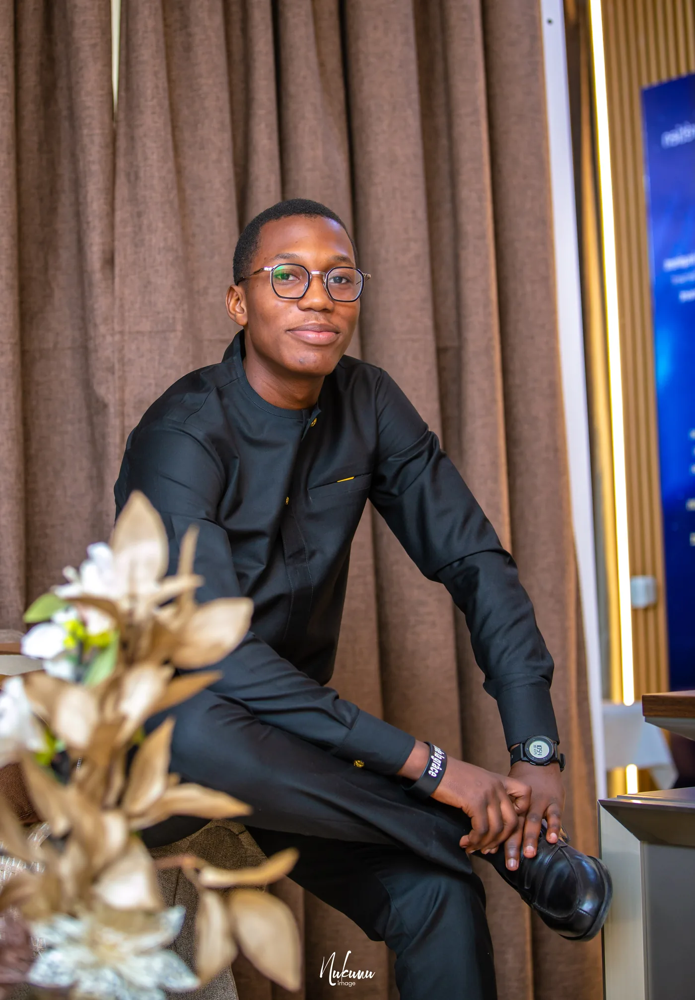
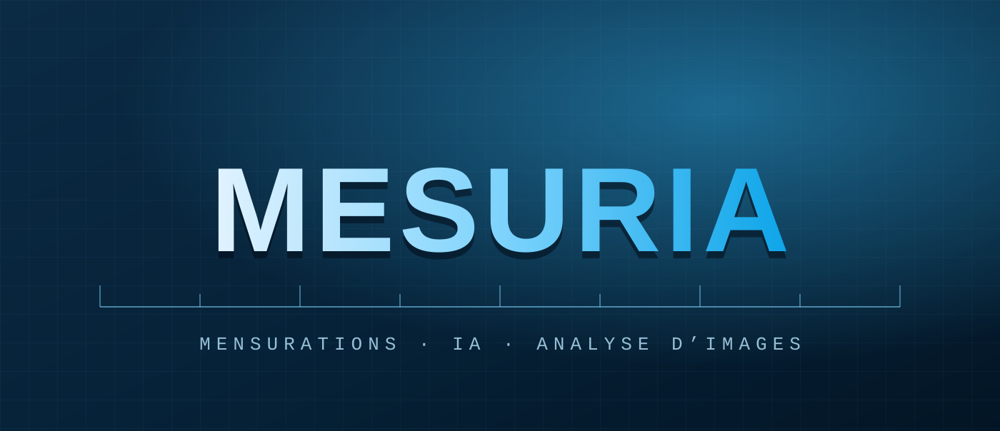
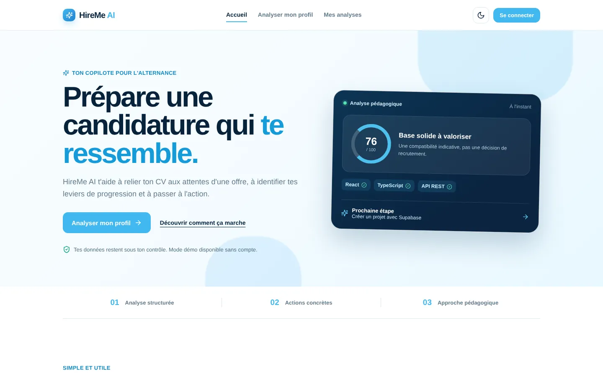
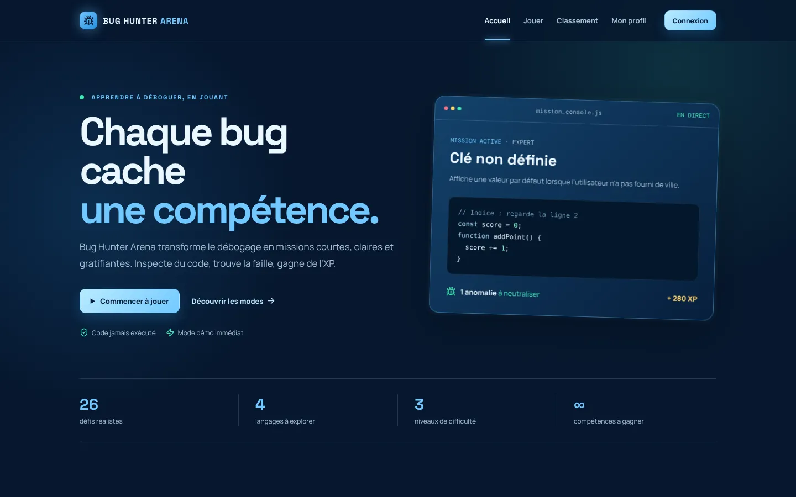
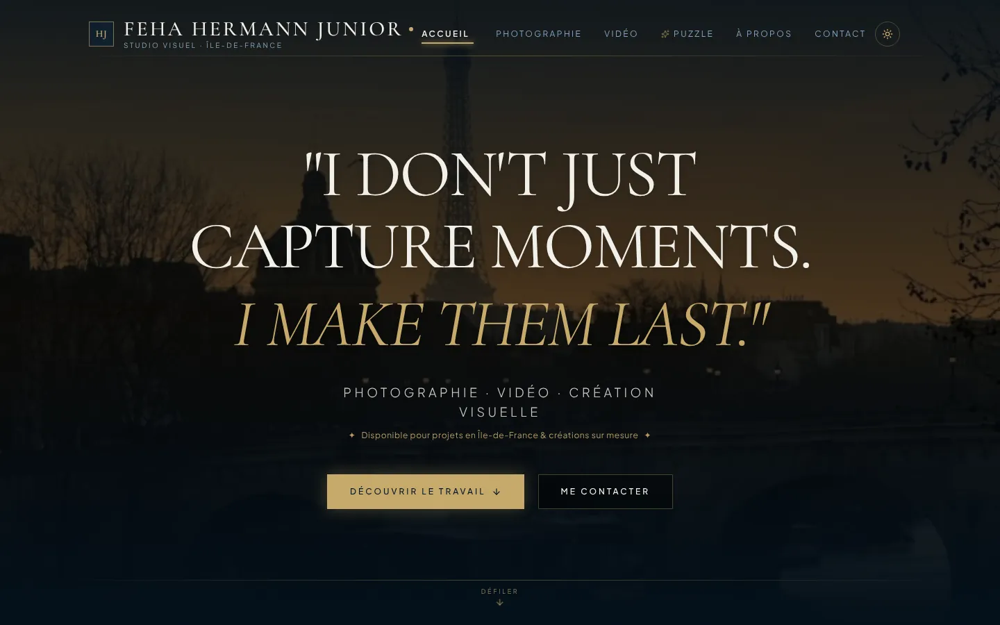
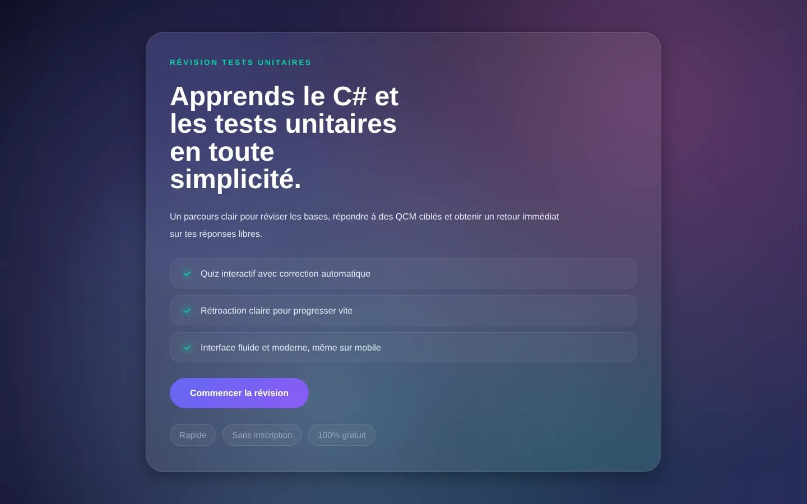
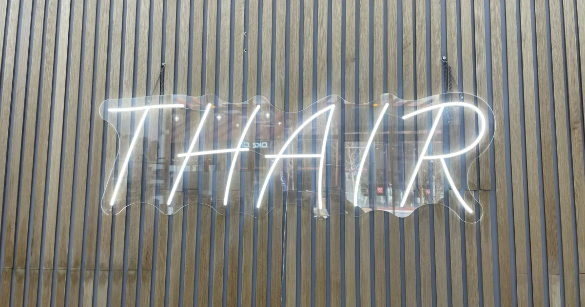

01
Front-end
Interfaces modernes, accessibles et adaptées à tous les écrans.
- HTML
- CSS
- JavaScript
- Responsive
Développeur Web & IA · France
Étudiant en 3e année de Bachelor Informatique, je conçois des applications web claires et des solutions IA utiles. Je suis disponible pour une alternance/un stage Immédiatement.
01 À propos
J’apprécie les expériences numériques utiles, simples à comprendre et solides à construire.

Ma démarche
Je crée des projets digitaux clairs, rigoureux et orientés valeur.
Étudiant en 3ᵉ année de Bachelor Informatique à SUPINFO, je crée des solutions digitales en m’appuyant sur une pratique de terrain. Passionné par le développement web et l’intelligence artificielle, je conçois des projets concrets et utiles.
Curieux et motivé, je cherche à contribuer à des initiatives innovantes dans le cadre d’une alternance ou d’un stage, dès maintenant.
Compétences
Des outils choisis pour construire des produits cohérents, du premier écran aux données.
01
Interfaces modernes, accessibles et adaptées à tous les écrans.
02
Logique applicative, stockage des données et intégrations utiles.
03
Applications qui mettent l’intelligence artificielle au service d’un besoin précis.
02 Formation
Une progression en informatique, complétée par des apprentissages concrets et créatifs.
Parcours
Les étapes principales de mon parcours académique et de mes formations complémentaires.
Sept. 2026 — Juil. 2027
Formation en cours
Approfondissement du développement web et de l’intelligence artificielle.
Sept. 2025 — Juil. 2026
Formation
Consolidation des fondamentaux du développement d’applications web.
Fév. 2025 — Août 2025
Formation
Acquisition d’une base générale en informatique.
Mars — Mai 2025
Formation complémentaire
Oct. 2024 — Jan. 2025
Formation complémentaire
Sept. 2022 — Juil. 2024
Diplôme
03 Projets
Des réalisations qui illustrent mon intérêt pour le web, les données et les expériences utiles.
Sélection
Une sélection de mes projets GitHub.
Voir tous mes projets sur GitHub
01Projet phare · Application Web · IA
Transformer une photo en informations exploitables.
Une application web qui automatise le calcul de mensurations corporelles à partir d’une image. Mesuria répond à un besoin de mesure plus simple, en s’appuyant sur une application web et l’analyse d’images.

02Application Web · IA
Préparer sa candidature en alternance, pas à pas.
Un assistant pédagogique qui compare un CV à une offre d’alternance pour faire ressortir les compétences à valoriser, les axes à travailler et les prochaines actions concrètes.

03Jeu web éducatif
Apprendre à déboguer en jouant.
Un jeu interactif pour apprendre à repérer, expliquer et corriger des bugs : 26 défis en HTML/CSS, JavaScript, PHP et SQL, sur trois niveaux de difficulté.

04Site vitrine créatif
Mettre en valeur la photo et la vidéo.
Un portfolio immersif pour mes créations en photographie, retouche et vidéo : galerie par catégories, visionneuse plein écran et mini-jeu de puzzle à partir de mes photos.

05Application web · C#
Réviser le C# et les tests unitaires.
Une application de révision qui pose des questions sur les tests unitaires (méthode AAA, mocks, injection de dépendances), puis calcule un score et donne des conseils pour progresser.

06Site web
Une vitrine pour un salon de coiffure.
Un site web conçu pour présenter une activité dans l’univers de la coiffure.
Plateforme web
Un site marchand de bout en bout.
Un projet de site marchand associant interface, catalogue et base de données.
Disponibilité
04 Contact
Pour une alternance, une collaboration ou simplement échanger sur un projet, je serais heureux de vous lire.
Me joindre
Je suis à la recherche d’une alternance ou d’un stage, disponible immédiatement. Vous pouvez me contacter directement ou utiliser le formulaire.